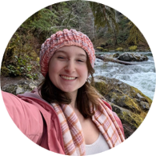

The Senior Design Team
The team that turned the idea into the first working prototype as a university capstone.


Benjamin Mingst
Originated the idea, designed the system architecture, led hardware development across all three generations, and rollerbladed 500 miles to fund the first prototype.

Lydia Emmons
Developed the web application and built an LLM chatbot that lets users interact with road data using natural language.
Andres Aguirre Rincon
Created the simulation pipeline and built the data generation system used to train the machine learning model.
Caleb Rosenfeld
Designed and developed the proprietary machine learning algorithm for detecting accidents from sensor data.